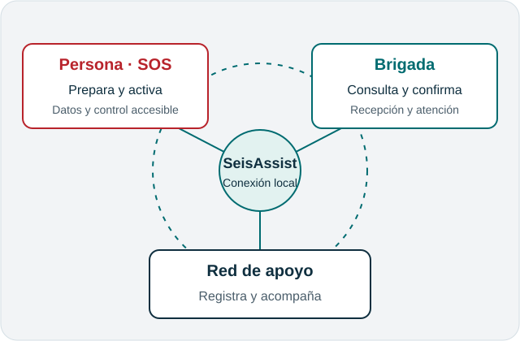

Persona que necesita asistencia
Prepara tu información, activa el SOS de prueba y distingue una emisión de una recepción confirmada.
PREPARACIÓN · RESPUESTA · CUIDADO
Prepara información de emergencia, conoce el recorrido SOS y acompaña a quienes requieren asistencia durante un sismo.
SeisAssist propone conectar a personas con discapacidad o vulnerabilidad médica, brigadistas y redes de apoyo cuando las telecomunicaciones fallan.

Prepara tu información, activa el SOS de prueba y distingue una emisión de una recepción confirmada.
Revisa alertas, consulta los datos autorizados y registra recepción, prioridad y atención en el escenario de prueba.
Registra un perfil ficticio, decide qué información compartir y consulta su última versión local.
Demostración académica: utiliza datos ficticios. El SOS y el acuse funcionan como estados de prueba en este navegador. No transmiten Bluetooth Mesh, no detectan personas ni envían ayuda real.
Preparando la copia local…
Otra pestaña cambió los datos. Recarga esta página antes de guardar. Conserva una copia de tus cambios pendientes.
Un control amplio para activar la alerta de prueba.
El acuse solo aparece cuando lo confirma el rol Rescatista. Repetir la activación no crea otra alerta.
El reintento utiliza el mismo paquete de datos. La retirada de consentimiento siempre elimina los datos médicos.
Comprueba datos locales, no cobertura de rescate. Compartir información médica es opcional.
Captura histórica, sin seguimiento en tiempo real. Los ejemplos se identifican expresamente.
Prueba por texto de la frase que reconocería el sistema de voz. Esta versión no captura audio.
Consulta local disponible sin solicitar datos a una nube.
Responsable de prueba: Brigadista Demo · B-12. Cambiar de rol no autentica a una persona.
Selecciona un marcador o utiliza el listado equivalente. P = pendiente; E = en atención; A = atendida.
Distribución ilustrativa: no mide distancia, dirección ni intensidad Bluetooth.
Sin perfil guardado
Usa datos ficticios. Los campos marcados «obligatorio» requieren una respuesta. «Desconocido» no equivale a «ninguno».
Último evento local de prueba; no es seguimiento remoto.
Sin consultas a una nube de perfiles.
Utiliza Tab para recorrer las acciones. En los roles, usa flechas, Inicio y Fin; Enter o Espacio activa el rol. Escape cierra menús y confirmaciones.
Los avisos combinan iconos, texto y color. «En emisión» y «Recepción confirmada» representan eventos diferentes.
Las ausencias de información se muestran explícitamente. La última ubicación incluye su fecha y el origen de la captura.